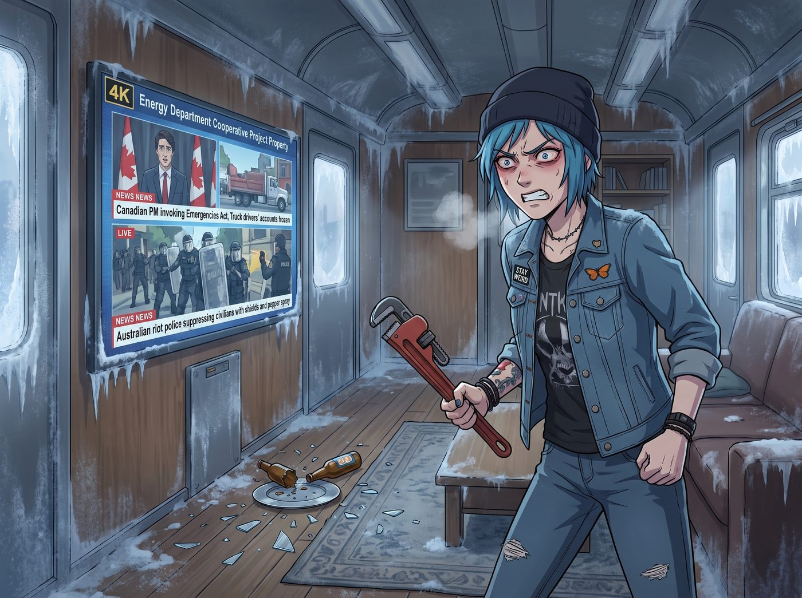

不存在的窮光蛋

二號車廂內的氣氛，已經降到了冰點。
牆上那台掛著「能源部合作專案財產」標籤的4K螢幕上，正在滾動播放著令人窒息的國際新聞：加拿大總理啟動《緊急狀態法》，那些按喇叭抗議的卡車司機們，在一夜之間發現自己的銀行帳戶、信用卡甚至加密貨幣錢包被全面凍結；緊接著畫面一轉，澳洲的全副武裝特警在街頭將抗議封城的平民狠狠按在地上，用防暴盾牌和胡椒噴霧進行無差別鎮壓。
一、砸向螢幕的啤酒瓶
「砰！」一個空啤酒瓶砸在螢幕旁邊的鋼板上，玻璃渣碎了一地。
Chloe 像一頭被徹底激怒的母獅子，雙眼充血，胸口劇烈起伏。她手裡緊緊攥著那把沉重的重型管鉗，指關節因為過度用力而泛白。
「這群穿西裝的法西斯……」Chloe 的聲音因為極度的憤怒而在顫抖，「他們怎麼敢？！」
Max 嚇得縮在沙發角落，連相機都不敢拿。Kate 則停下了手裡打毛線的動作，擔憂地看著處於爆發邊緣的 Chloe。
「妳們看到沒有？！」Chloe 猛地轉過身，指著電視螢幕上那些被凍結了資金、買不起汽油也買不起食物，只能在風雪中絕望哭泣的卡車司機。
「我爸畫了一輩子設計圖，我媽在那間破餐廳裡端了半輩子盤子，連 David 那個老兵也是每天在車庫裡吸著廢氣修車！還有我……如果我們當年沒有離開阿卡迪亞灣，我現在大概也是個在港口開堆高機的藍領！」
Chloe 咬牙切齒地怒吼著，每一句話都帶著底層勞工的血淚與屈辱：「我們是用雙手讓這個見鬼的國家運轉起來的人！沒有這些卡車司機，那些高高在上的政客連一口乾淨的水都喝不到！而現在，就因為那個政客看他們不爽，就可以不經過法院、不經過審判，啪地一聲按個按鈕，把他們一輩子的血汗錢全部清零？！」
Chloe 越說越激動，她舉起了手裡的管鉗，朝著那台昂貴的電視螢幕狠狠砸去。「我要砸了這破玩意兒！這世界已經沒救了！」
二、暴力的進化
「Chloe 學姐，請住手。」
一隻蒼白、冰冷的小手，精準地握住了管鉗的末端。
Lily 不知什麼時候已經站在了電視機前。她今天穿著一件深灰色的羊絨開衫，圓框眼鏡在電視新聞的冷光下反射著無機質的光芒。她的力量不大，但卻用一種絕對理性的姿態，擋在了那台螢幕前。
「這台顯示器是能源部合作專案名義撥給我們的設備。如果損壞，我不僅需要編造一份遭到極端氣候雷擊的虛假報告，還會觸發資產重新審計。」Lily 語氣平靜，彷彿在陳述天氣預報，「為了您的血壓和我的工作量，請放下管鉗。」
「讓開，Lily！」Chloe 怒視著她，「妳難道看不出來這意味著什麼嗎？今天他們能封鎖加拿大的卡車司機，明天他們就能封鎖任何一個他們不喜歡的人！妳的那些合規在這種絕對的國家暴力面前算個屁！」
Lily 靜靜地看著 Chloe 憤怒的雙眼，然後輕輕地、不容置疑地將管鉗從她手裡抽了出來，放在地上。
「學姐，您生氣，是因為您只看到了暴力的表象，卻沒有看懂暴力的進化。」
Lily 轉過身，拿起遙控器，將畫面定格在澳洲特警揮舞警棍的那一幕。「您看這個。這種暴力封城。在您看來這很可怕對嗎？但在行政學和統治階級眼裡，這是最低級的治理手段。動用特警、製造流血衝突，這意味著行政系統的無能。物理鎮壓成本高昂，且極易引發強烈的反噬和同情。」
接著，Lily 將畫面切換回加拿大總理宣佈凍結帳戶的新聞發布會。「這，才是真正的現代國家恐怖主義。這是終極的行政黑魔法。」
Lily 推了推眼鏡，聲音軟糯卻透著刺骨的寒意：「他們不需要開槍，也不需要流血。他們只是剝奪了那些司機在現代社會中的數位生存權。沒有銀行帳戶，你買不到汽油、付不起房租、買不到嬰兒奶粉。這叫社會性抹殺。卡車司機們擁有強壯的體魄和幾十噸重的重型機械，但在金融系統的Delete鍵面前，他們比一隻螞蟻還要脆弱。」
三、三層防禦
Chloe 愣住了。這正是讓她感到最深層恐懼的地方——那是一種無論你拳頭多硬、扳手多重，都無法反抗的無力感。
「所以呢？」Chloe 的聲音軟了下來，帶著一絲絕望，「如果他們可以隨時拔掉我們的插頭，我們還能怎麼辦？等死嗎？」
「這正是為什麼，我們絕對不能把自己的命脈，交給那些受政府監管的傳統金融基礎設施。」Lily 走回她的工作站，在鍵盤上敲擊了幾下，巨大的電視螢幕瞬間切換成了一張極度複雜的資產架構圖。
「Chloe 學姐，您真的以為，這幾個月來我用合作專案名義向外申請的那些經費、以及我們從 Victoria 學姐那裡賺來的顧問費，都存在傳統商業銀行裡嗎？」
Lily 指著螢幕上那些猶如迷宮般的節點，露出了一個純潔無暇的微笑：
「第一層，二號車廂的日常營運資金，掛在一個能源部合作專案的二級外包帳戶下。沒有任何一個州的警察或者銀行敢輕易動這個帳戶，除非他們想跟聯邦機構打交道。」
「第二層，我們的大額儲備金。」Lily 的手指劃過幾個加密符號，「我通過幾家位於開曼群島和特拉華州的空殼公司，將資金轉換成了分散在多個冷錢包裡的穩定幣和比特幣。我們甚至利用了一些去中心化交易所的非託管協議來確保流動性。政客可以給銀行打電話，但他們無法給區塊鏈打電話。」
「第三層，實體物資防禦。」Lily 轉頭看向窗外那些安靜運轉的太陽能板，以及營地角落裡堆積如山的軍用口糧和過濾水設備，「他們凍結卡車司機的帳戶，是為了切斷補給。但我們擁有獨立的微型電網，和足夠支撐五年的物理生存物資。即使這個國家的金融系統明天就崩潰，我們依然能在這裡喝著熱騰騰的燕麥奶拿鐵。」
四、不存在的窮光蛋
整個車廂安靜得只能聽到外面風雪的聲音。
Chloe 呆呆地看著那張密密麻麻的架構圖。她突然意識到，當全世界的藍領工人都在為被政客踩在腳下而憤怒哀嚎時，這個行政女孩，已經在不知不覺中，為她們這個小小的四人家庭，打造了一個連國家機器都無法輕易摧毀的行政與金融堡壘。
「妳……」Chloe 嚥了一口唾沫，「妳早就料到會有這一天？」
「不要相信任何有權利凍結你資產的實體。這是行政學的基礎公理，學姐。」Lily 乖巧地端起杯子，喝了一口溫熱的牛奶。
「卡車司機們很偉大，但他們太誠實了。他們把錢存在實名制的銀行裡，用自己名下的執照開車，這等於把脖子洗乾淨了遞給政客。」Lily 推了推圓框眼鏡，眼神中閃過一絲令人敬畏的冷酷：「在這個瘋狂的時代，想要不被系統抹殺，唯一的辦法就是——在系統的帳面上，妳必須是一個不存在的窮光蛋；但在物理現實中，妳必須擁有掌控一切的資源。」
Chloe 默默地彎下腰，撿起剛才被她扔在地上的那把管鉗。她沒有再去看電視上那些令人憤怒的新聞。她只是走到 Lily 身邊，用肩膀輕輕撞了一下這個比她矮了半個頭的腹黑少女。
「實習生。」Chloe 嘴角勾起一抹帶著痞氣的笑容，雖然眼眶還有些發紅，但恐懼已經消散了。「如果哪天外面那群西裝暴徒真的打過來了，我負責用這把管鉗敲碎他們的膝蓋骨……」
「而我，」Lily 溫柔地接過話頭，眼神無比純良，「會負責在五分鐘內，讓他們的退休金帳戶和聯邦醫保紀錄在系統裡徹底蒸發。合法且合規地。」
Max 坐在沙發上，看著這兩個達成某種恐怖默契的法外狂徒，默默地抱緊了抱枕。「Kate，」Max 小聲說道，「我覺得比起外面的政府，我們車廂裡的這個組合好像更反人類一點……」
「不會呀，」Kate 從烤箱裡端出一盤香噴噴的肉桂捲，笑得像個天使，「Lily 這是保護家人的表現呢。來，吃點甜的，血壓就會降下來了。」